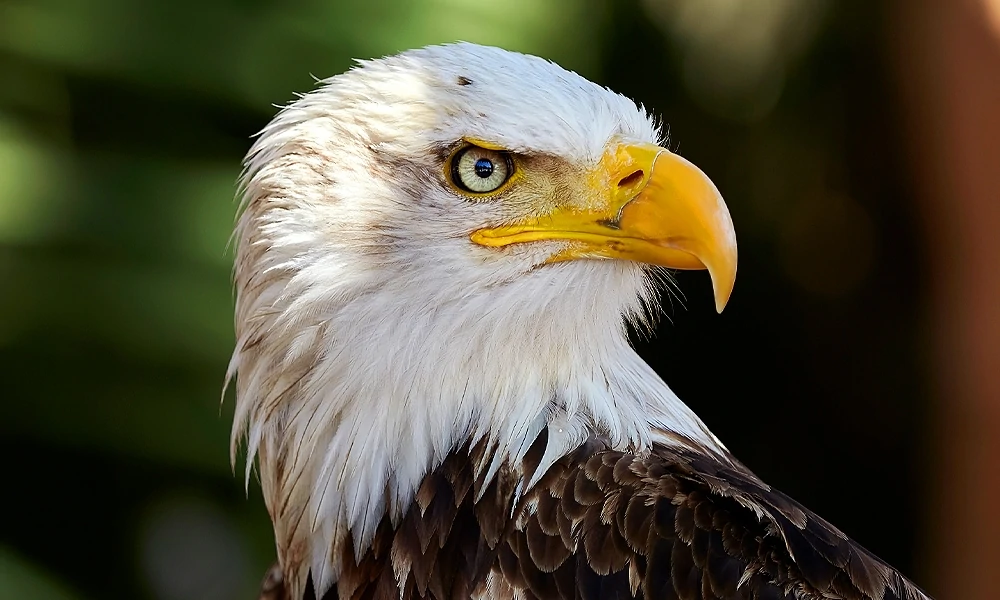
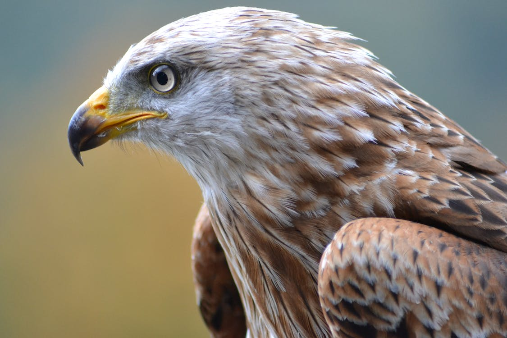
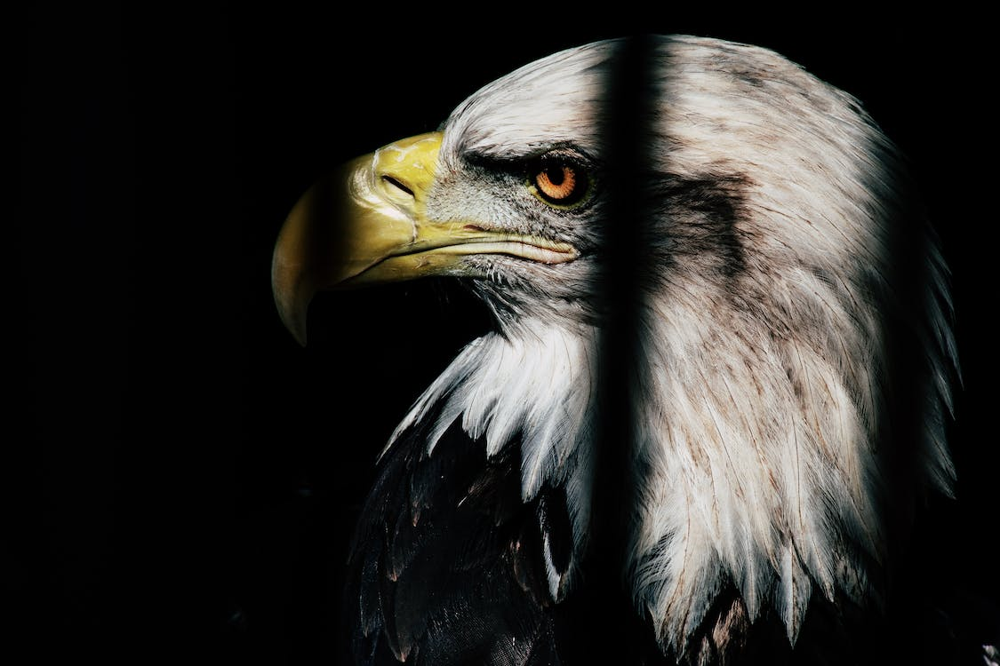

Eagles have occupied a revered and enduring place in the human imagination, symbolizing might, regality, and ferocity. Often hailed as the "king of birds," eagles transcend mere symbolism, as their profound meanings resonate in diverse cultures and traditions across the globe. In this comprehensive blog post, we embark on a journey into the rich and multifaceted world of eagle symbolism and significance. From their central role in Native American culture to their representation in Christianity and Celtic folklore, we'll unravel the layers of meaning associated with these majestic birds.
⇨ Eagle Symbolism and Meaning
Eagles are emblematic of formidable qualities, embodying strength, ferocity, focus, and unwavering willpower. Their connection to the sun, the sky, and even heaven alludes to a bright future on the horizon. Resilience, endurance, and the ability to weather life's storms are the hallmarks of the eagle's symbolism. Their presence signifies truth, justice, honesty, integrity, and an unwavering commitment to duty. The eagle stands as a symbol of leadership, authority, wisdom, and vision, epitomized by its piercing, all-seeing gaze.
⇨ Eagle Native American Symbolism
In the tapestry of Native American cultures, eagles hold a sacred and exalted status. Their soaring flight high above all other avian beings symbolizes a divine connection. Eagles are seen as messengers between Earth and the heavens, embodying the attributes of powerful leaders and sacred healers. The feathers of eagles are revered as sacred objects, often used in healing rituals and sacred ceremonies. In certain instances, clutching an eagle feather signifies a speaker's commitment to absolute truthfulness.
⇨ Eagle Christianity Symbolism
IWithin the Christian tradition, eagles are intricately woven into the fabric of divine symbolism. They are linked to concepts of divine protection, guidance, and safety. The eagle symbolizes the strength of God's love, fostering a sense of renewal, youth, and spiritual rebirth. Numerous biblical passages employ the eagle as a metaphor for might, speed, and ferocity, underscoring its profound significance in Christian symbolism.
⇨ Eagle Celtic Symbolism
In the rich tapestry of Celtic traditions, eagles represent a unique set of attributes. They are associated with focus, wisdom, and access to ancient knowledge. Furthermore, due to their scavenging tendencies, eagles may also be symbolically connected to themes of death and bloodshed. In Celtic cultures, warriors were praised for "glutting" or "feeding" the carrion birds of the battlefield, an image that underscores the eagle's multifaceted symbolism. Eagles may also be linked to the ferocious sea or the occupation of fishermen in Celtic lore, reflecting their versatility and diverse symbolism.
⇨ Eagle in Dreams

Dreams featuring eagles carry a myriad of possible interpretations. A soaring eagle represents courage, freedom, and an elevated perspective on life's challenges. Dreaming of an eagle's nest signifies a need for protection or mentorship. Dreaming of eaglets may suggest unrealized potential, emphasizing the importance of seeking guidance and support in personal growth. Becoming an eagle in a dream symbolizes rebirth or escape, prompting introspection regarding one's approach to life's challenges. Lastly, dreaming of an eagle on the ground may indicate a sense of stagnation or a yearning for new experiences and challenges.
⇨ Eagle Encounters and Omens
Encountering an eagle is an awe-inspiring experience that transcends the ordinary and often stirs a deep sense of spiritual connection. Throughout history, the flight of eagles has carried significant symbolism, denoting victory, safe return from perilous journeys, the triumph of justice, and the manifestation of the righteous wrath of individuals. In the realm of ancient Greek augury and ornithomancy, practices that derived predictions from the behavior of birds, the flight of an eagle overhead was considered a direct sign from the gods, foretelling victory, justice, and safe passage. Poignant examples of eagle symbolism can be found in the epic poems of Homer, where eagles serve as emblems of heroes and prophetic messengers.
⇨ Eagle Mythology and Folklore
Eagles are not only revered for their grandeur but also woven into the tapestry of global mythological traditions. Their roles may vary, but their virtues of royalty, might, wisdom, and justice are universally recognized. In Welsh mythology, eagles occupy a unique position as ancient and wise creatures, providing invaluable advice and guidance to heroes on their quests. In Greek mythology, the eagle symbolizes the god Zeus and is believed to bear his mighty thunderbolts from the heavens. An eagle, known as the "Caucasian Eagle," is tasked by Zeus to punish the rebellious god Prometheus for bestowing fire upon humanity. This eagle symbolizes both the relentless pursuit of justice and the eternal suffering of Prometheus. In the myths of Japan, eagles are personified as "Tengu," powerful spirits that exist in a space between war gods and nature spirits. They are characterized by red skin, long noses, powerful wings, and bird-like features, such as talons. In Native American cultures, the Thunderbird, resembling an eagle, plays a pivotal role in mythology, commanding storms and guiding great leaders.
⇨ Eagle Spirit, Totem, and Power Animals
The eagle spirit animal represents a unique combination of ambition, duty, fortitude, and unyielding willpower. Those who have the eagle as their spirit animal possess an unshakeable resolve in the face of life's challenges. They are natural leaders with a keen sense of vision, setting their sights on their goals with unwavering focus and precision. Like the symbolic Bald Eagle, representing the land of the free, individuals with the eagle as their spirit animal find true contentment when they can soar freely and unburdened. However, this can sometimes lead to challenges in teamwork and cooperation, as they may perceive authority and conformity as threats. Nevertheless, their personal moral compass guides them, and they exhibit an unswerving commitment to self-improvement and forging new paths to a brighter future.

The eagle totem animal is marked by emotional intensity and passion. Individuals with the eagle as their totem animal are characterized by fiery determination, which can lead to remarkable careers, artistic brilliance, powerful leadership, and profound interpersonal relationships. However, this intensity may also pose challenges, causing individuals to struggle to remain grounded. When lacking a clear sense of purpose or passion, those with the eagle totem can stagnate. They may be quick to anger and experience a whirlwind of emotions, rushing headlong into relationships that may prove emotionally overwhelming. Nevertheless, in healthy and fulfilling relationships, the eagle totem demonstrates love, attentiveness, and a prioritization of family and loved ones.
The eagle power animal embodies the gifts of vision, perspective, and healing. It epitomizes the notion of the "bird's eye view," offering an enhanced and objective perspective that transcends narrow viewpoints. With the eagle's vision, one can make fair and logical decisions, fostering empathy through a comprehensive understanding of others' struggles. Perspective is a potent tool for enlightenment and healing, allowing us to uncover hidden truths, rise above pettiness, and view situations with impartiality and compassion.
⇨ Eagle Tattoo Meaning
Eagle tattoos are popular across the world and hold a multitude of symbolic meanings. As the national bird of the United States and the emblem on the Great Seal of America, eagle tattoos are deeply associated with power, strength, courage, and focus. The Founding Fathers of the U.S. chose the eagle as a symbol, underlining its significance in American culture and history. Beyond its patriotic connotations, eagle tattoos may represent knowledge, beauty, nature, sharpness, or majesty. Due to the pivotal role that eagles play in Native American cultures, they are often chosen as symbols in tattoos that pay homage to Native American heritage. An eagle tattoo serves as a visually impactful representation of the qualities eagles themselves embody, and each tattoo can carry as many symbolic meanings as there are individual interpretations.
⇨ Conclusion

Eagles, often celebrated as the "king of birds," have a timeless allure that transcends cultural and ideological boundaries. Their majestic presence and deep symbolism inspire awe and a profound appreciation for unbridled power and freedom. The eagle embodies a regal beauty that leaves us speechless, defying verbal expression. As humans, we can only imagine the extraordinary sensation of soaring alongside these magnificent raptors. Nevertheless, the eagle's majesty continues to captivate our hearts and minds, reminding us of the enduring values and virtues they symbolize. In a world where symbolism and meaning abound, the eagle stands as an eternal symbol of might, regality, and the indomitable spirit of freedom.